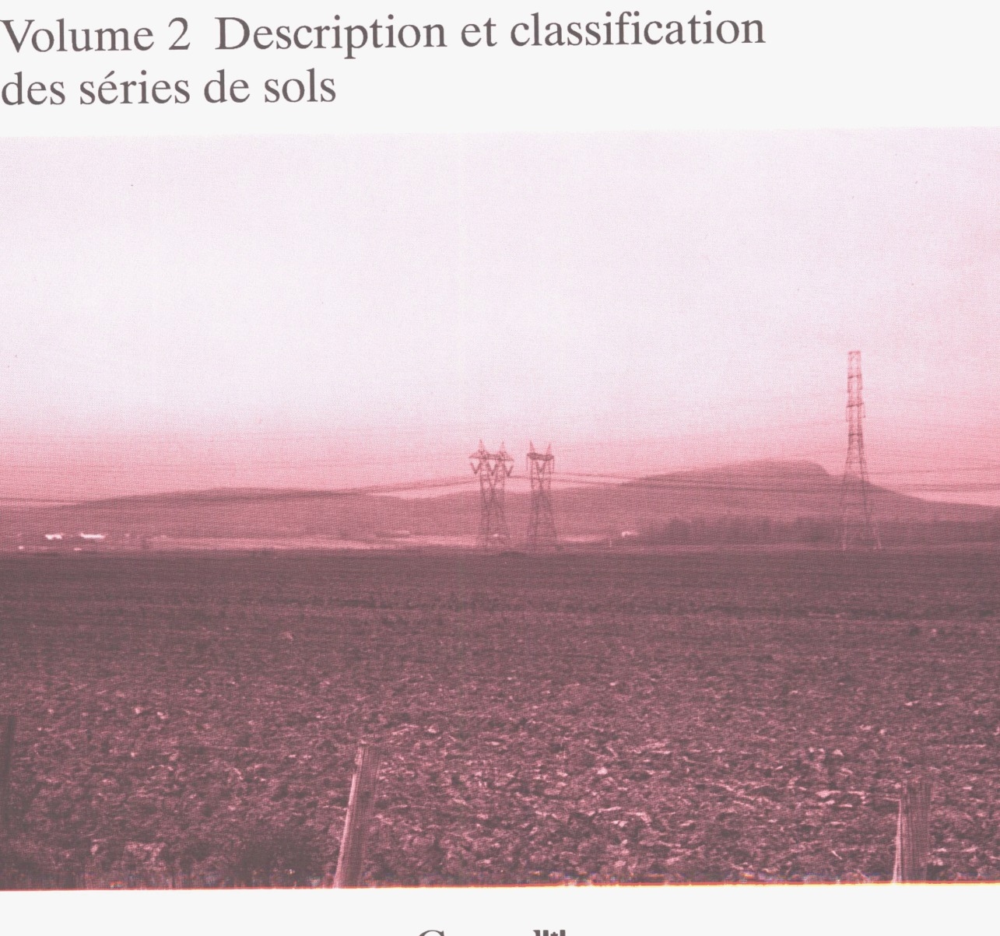
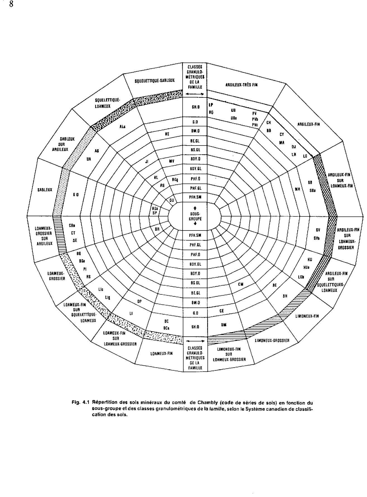
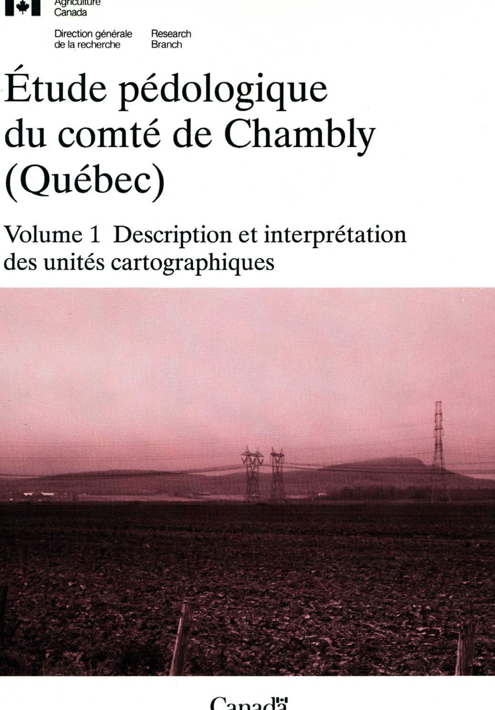
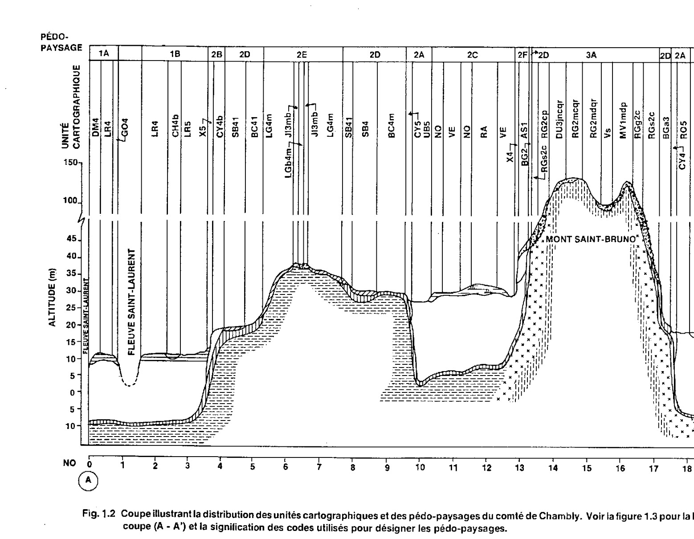
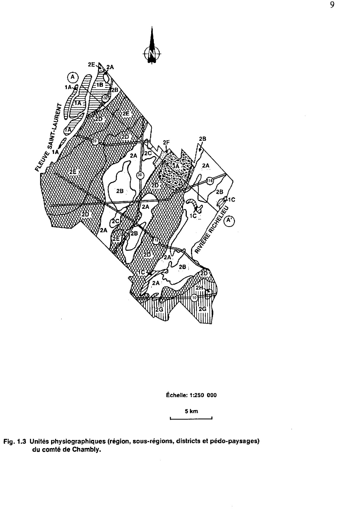

Identification & Caractéristiques Générales
La série de Chambly se compose de sols profonds développés sur un matériau parental argileux fin, parfois stratifié, alcalin à faiblement calcaire, mis en place sous forme de couverture sédimentaire sus-jacente à un dépôt loameux. Ces sols occupent les secteurs de la plaine étale de la vallée du Saint-Laurent, principalement au voisinage des replats morainiques. La topographie associée est plane à modérément inclinée, avec des déclivités variant généralement de 0 à 5 %, ce qui caractérise des positions géomorphologiques de basses terrasses ou de plaines de submergence marine et lacustre.
Sur le plan morphologique et hydropédologique, ces profils présentent un drainage naturel déficient, étant classés comme mal drainés. La texture dominante de surface est l'argile ou l'argile limoneuse, reposant en profondeur sur des horizons plus lourds ou loameux. La perméabilité est généralement lente à modérée selon les strates, et le profil est caractérisé par une nappe phréatique temporairement perchée ou affleurant en période de fonte des neiges et de fortes précipitations. La réaction du sol (pH) est neutre à alcaline dans les horizons inférieurs en raison de la présence de carbonates, tandis que la structure de surface est sujette à la battance et à un compactage modéré en l'absence de gestion organique adéquate.
Sur le plan agronomique, les sols de la série de Chambly sont principalement dévolus aux grandes cultures et aux cultures fourragères, bien qu'une proportion variable demeure en friche ou boisée. Leur principale limitation réside dans l'excès d'eau et la lenteur du ressuyage au printemps, nécessitant l'installation systématique d'un réseau de drainage souterrain pour optimiser le calendrier cultural. La régie agronomique doit également intégrer un travail du sol rigoureux afin de préserver la structure de la couche arable, d'atténuer les risques de formation de croûtes de battance et d'assurer une gestion équilibrée des fertilisants, ces sols disposant par ailleurs d'une réserve utile et d'un niveau de fertilité intrinsèque élevés.
Classification Taxonomique & Environnement Pédologique
| Ordre Pédologique | Gleysolique |
|---|---|
| Grand Groupe (SCSS) | Gleysol humique |
| Sous-Groupe Taxonomique | Gleysol humique orthique |
| Famille Pédologique | Argileuse-très fine, mixte argileux, alcalin (calcaire) |
| Mode de Dépôt Parental | Fluviatile sur morainique |
| Classe de Drainage Naturel | Mal drainé |
| Régime Thermique & Humidité | Doux / Perhumide |
Description Morphologique du Profil Type
Séquences génétiques des horizons pédologiques caractérisant le profil type représentatif de la série Chambly :
Profil cultivé (agricole) — Comté de Chambly
✓ Source : Comté de Chambly — Page 36Couleur Munsell : 5Y 4/2
Structure & Consistance : Polyédrique subangulaire
Description morphologique : Argile limoneuse; brun grisâtre foncé (2,5Y 4/2); structure polyédrique subangulaire, fine, faiblement à modérément développée; consistance friable; modérément poreuse; limite nette, régulière; réaction neutre.
Couleur Munsell : 10YR 5/3 (matrice), 5Y 5/2 (marbrures)
Structure & Consistance : Polyédrique subangulaire
Description morphologique : Argile limoneuse; brune (10YR 5/3) et brun grisâtre (2,5Y 5/2); marbrures brun jaunâtre foncé (10YR 4/6), nombreuses, fines, distinctes à marquées; structure polyédrique subangulaire, fine, faiblement développée; consistance friable, modérément poreuse; limite nette, régulière; réaction neutre.
Couleur Munsell : 5YR 5/2 (matrice), 5Y 5/2 (marbrures)
Structure & Consistance : Polyédrique subangulaire
Description morphologique : Argile lourde (présence de lamelles de loam limoneux); brune (7,5YR 5/2) et brun grisâtre (2,5Y 5/2); marbrures brun jaunâtre foncé (10YR 4/6), nombreuses, moyennes, marquées; structure polyédrique subangulaire, fine, faiblement développée; consistance friable; modérément poreuse; limite nette, régulière; réaction faiblement alcaline.
Couleur Munsell : 5YR 4/3 (matrice), 5Y 4/1 (marbrures)
Structure & Consistance : Polyédrique à granulaire
Description morphologique : Argile lourde (présence de lamelles de loam limoneux); brun foncé à brune (7,5YR 4/3) et gris foncé à brun grisâtre foncé (2,5Y 4/1); marbrures jaune brunâtre (10YR 6/6), nombreuses, fines, marquées; massive; consistance ferme; peu poreuse; effervescence modérée; réaction faiblement alcaline.
Profil cultivé (agricole) — Comté de Chambly
✓ Source : Comté de Chambly — Page 126Couleur Munsell : 2.5Y 4/2, 2.5Y 6/2
Structure & Consistance : Polyédrique subaugulaire fine
Description morphologique : Argile limoneuse; brun-gris foncé (2.5Y 4/2 h); gris-brun clair (2.5Y 6/2 s); structure polyédrique subaugulaire fine, faible à modérée; très dur à l'état sec, friable à l'état humide, collant à l'état trempé; assez poreux; transition nette et régulière; neutre.
Couleur Munsell : 10YR 5/3 (matrice), 10YR 4/6 (marbrures)
Structure & Consistance : Polyédrique subangulaire fine
Description morphologique : Argile limoneuse, brune (10YR 5/3 h); marbrures très nombreuses, petites, marquées, brun-jaune foncé (10YR 4/6 h); structure polyédrique subangulaire fine, faible; très dur à l'état sec, friable à l'état humide, collant à peu collant à l'état trempé; assez poreux; transition nette et régulière neutre.
Couleur Munsell : 7.5YR 5/2 (matrice), 10YR 4/6 (marbrures)
Structure & Consistance : Polyédrique subangulaire fine
Description morphologique : Argile lourde, brune (7.5YR 5/2 h) marbrures très nombreuses, moyennes, marquées, brun-jaune foncé (10YR 4/6 h); structure polyédrique subangulaire fine, faible; très dur à dur à l'état sec, friable à l'état humide, collant à l'état trempé; assez poreux; faiblement alcalin.
Couleur Munsell : 7.5YR 4/3 (matrice), 10YR 6/6 (marbrures)
Structure & Consistance : Massive
Description morphologique : Argile lourde, avec présence de très minces lits de loam limoneux; brun foncé (7.5YR 4/3 h) marbrures très nombreuses, moyennes, marquées, jaune-brun (10YR 6/6 h); structure massive; extrêmement dur à l'état sec, ferme à l'état humide, collant à l'état trempé; peu poreux; effervescence modérée; faiblement alcalin.
Profil cultivé (agricole) — Comté de Chambly
✓ Source : Comté de Chambly — Page 128Couleur Munsell : 10YR 3/2, 2.5Y 5.5/2
Structure & Consistance : Polyédrique subangulaire fine
Description morphologique : Argile limoneuse, brun-gris très foncé (10YR 3/2 h); brun-gris (2.5Y 5.5/2 s); structure polyédrique subangulaire fine, modérée; dur à sec, très friable à l'état humide, collant à l'état trempé; très poreux; transition abrupte et régulière; fortement acide.
Couleur Munsell : 5Y 5/2 (matrice), 10YR 4/7 (marbrures)
Structure & Consistance : Polyédrique fine
Description morphologique : Argile lourde, gris olive (5Y 5/2 h); marbrures très nombreuses, moyennes, marquées, brun-jaune foncé (10YR 4/7 h); structure polyédrique fine, très faible; extrêmement dur à l'état sec, ferme à l'état humide, peu collant à l'état trempé; peu poreux; transition nette et régulière; moyennement acide.
Couleur Munsell : 2.5Y 5/1 (matrice), 10YR 4/5 (marbrures)
Structure & Consistance : Polyédrique subangulaire fine
Description morphologique : Argile lourde, grise (2.5Y 5/1 h); marbrures très nombreuses, moyennes, marquées, brun-jaune foncé (10YR 4/5 h); structure polyédrique subangulaire fine, modérée; extrêmement dur à l'état sec, très friable à l'état humide, collant à l'état trempé; très poreux; transition graduelle et régulière; faiblement acide.
Couleur Munsell : 5Y 5/2 (matrice), 10YR 5/6 (marbrures)
Structure & Consistance : Polyédrique subangulaire moyenne
Description morphologique : Argile lourde, gris-olive (5Y 5/2 h); marbrures très nombreuses, petites, marquées, brun-jaune (10YR 5/6 h); structure polyédrique subangulaire moyenne, modérée; extrêmement dur à l'état sec, friable à l'état humide, collant à l'état trempé; assez poreux; neutre.
Profil cultivé (agricole) — Comté de Chambly
✓ Source : Comté de Chambly — Page 129Couleur Munsell : 10YR 4/4, 2.5Y 6/2
Structure & Consistance : Polyédrique subangulaire fine
Description morphologique : Loam argileux, brun-jaune foncé (10YR 4/4 h); gris-brun clair (2.5Y 6/2 s); structure polyédrique subangulaire fine, modérée; dur à l'état sec, friable à l'état humide, peu collant à l'état trempé; assez poreux; transition nette et régulière; fortement acide.
Couleur Munsell : 5Y 5/2 (matrice), 10YR 5/8 (marbrures)
Structure & Consistance : Massive
Description morphologique : Argile limoneuse, gris-olive (5Y 5/2 h); marbrures très nombreuses, grandes, marquées, brun-jaune (10YR 5/8 h); structure massive; consistance très dur à l'état sec, ferme à l'état humide, collant à l'état trempé; peu poreux; transition nette et régulière; fortement acide.
Couleur Munsell : 2.5Y 5/1, 10YR 5/7
Structure & Consistance : Massive
Description morphologique : Loam, graveleux gris (2.5Y 5/1 h); marbures très nombreuses, petites à moyennes, marquées, brun-jaune (10YR 5/7 h); structure massive; peu dur à l'état sec, friable à l'état humide, peu collant à l'état trempé; peu poreux; transition graduelle et régulière; faiblement acide.
Couleur Munsell : 2.5Y 5/2 (matrice), 10YR 5/7 (marbrures)
Structure & Consistance : Massive
Description morphologique : Loam, graveleux brun-gris (2.5Y 5/2 h); marbrures nombreuses, petites, fortes, brun-jaune (10YR 5/7 h); structure massive; peu dur à l'état sec, friable à l'état humide, peu collant à l'état trempé; faiblement acide.
Profil cultivé (agricole) — Comté de Chambly
✓ Source : Comté de Chambly — Page 131Couleur Munsell : 10YR 3/3, 10YR 5/3
Structure & Consistance : Granulaire moyenne
Description morphologique : Loam, brun foncé (10YR 3/3 h); brun (10YR 5/3 s); structure granulaire moyenne, modérée; peu dur à l'état sec, très friable à l'état humide, peu collant à l'état trempé; très poreux; transition nette et régulière; faiblement acide.
Couleur Munsell : 10YR 3/3 (matrice), 10YR 7/3 (marbrures)
Structure & Consistance : Polyédrique moyenne
Description morphologique : Loam, brun (10YR 3/3 h); brun très pâle (10YR 7/3 s); marbrures très nombreuses, moyennes, marquée, brun-jaune (10YR 5/8 h); structure polyédrique moyenne, modérée; très dur à l'état sec, friable à l'état humide, peu collant à l'état trempé; assez poreux; transition nette et régulière; neutre.
Couleur Munsell : 2.5Y 5/2 (matrice), 10YR 6/7 (marbrures)
Structure & Consistance : Massive
Description morphologique : Loam sableux très fin, brun-gris (2.5Y 5/2 h); marbrures très nombreuses, moyennes, marquées, brun-jaune (10YR 6/7 h); structure massive; peu dur à l'état sec, très friable à l'état humide, peu collant à l'état trempé; peu poreux; effervescence très faible; transition nette et régulière; faiblement alcalin.
Couleur Munsell : 2.5Y 6/2
Structure & Consistance : Massive
Description morphologique : Loam sableux très fin, gris-brun clair (2.5Y 6/2 h); marbrures très nombreuses, moyennes, marquées, olive clair (2.5Y 6/2 h); structure massive; tendre à l'état sec, très friable à l'état humide, non collant à l'état trempé; peu poreux; effervescence modérée; faiblement alcalin.
Profil forestier / boisé — Comté de Chambly
✓ Source : Comté de Chambly — Page 132Couleur Munsell : Non précisée
Structure & Consistance : Polyédrique à granulaire
Description morphologique : Organique; transition abrupte et régulière.
Couleur Munsell : 10YR 2/2, 10YR 3/2
Structure & Consistance : Granulaire fine
Description morphologique : Loam sableux, brun très foncé (10YR 2/2 h); brun-gris très foncé (10YR 3/2 s), racines très nombreuses, très fines à grossières, horizontales; structure granulaire fine, modérée; tendre à l'état sec, très friable à l'état humide, peu collant à l'état trempé; très poreux; transition graduelle et régulière; moyennement acide.
Couleur Munsell : 7.5YR 3.5/4
Structure & Consistance : Granulaire fine
Description morphologique : Sable loameux, caillouteux, brun foncé (7.5YR 3.5/4 h); racines très nombreuses, très fines à grossières, horizontales; structure granulaire fine, faible; tendre à l'état sec, très friable à l'état humide, non collant à l'état trempé; très poreux; transition graduelle et régulière; faiblement acide.
Couleur Munsell : 10YR 4/4
Structure & Consistance : Granulaire fine
Description morphologique : Sable loameux, caillouteux, brun-jaune foncé (10YR 4/4 h); racines nombreuses, très fines à moyennes, horizontales; structure granulaire fine, faible; tendre à l'état sec, très friable à l'état humide, non collant à l'état trempé; très poreux; transition graduelle et régulière; moyennement acide.
Couleur Munsell : 10YR 4/4
Structure & Consistance : Granulaire fine
Description morphologique : Loam sableux, caillouteux, brun-jaune foncé (10YR 4/4 h); racines nombreuses, très fines à moyennes, horizontales; structure granulaire fine, faible; peu dur à l'état sec, très friable à l'état humide, peu collant à l'état trempé; très poreux; transition graduelle et régulière; moyennement acide.
Couleur Munsell : 10YR 5/5
Structure & Consistance : Granulaire fine
Description morphologique : Sable loameux, caillouteux, brun-jaune (10YR 5/5 h); racines peu nombreuses, très fines à fines, horizontales; structure granulaire fine, faible; tendre à l'état sec, très friable à l'état humide; non collant à l'état trempé; très poreux; faiblement acide.
Profil cultivé (agricole) — Comté de Chambly
✓ Source : Comté de Chambly — Page 134Couleur Munsell : 10YR 3/2, 10YR 5/2
Structure & Consistance : Granulaire moyenne
Description morphologique : Loam argileux, brun-gris très foncé (10YR 3/2 h), brun-gris (10YR 5/2 s); structure granulaire moyenne, faible; dur à l'état sec, friable à l'état humide, peu collant à l'état trempé; assez poreux; transition nette et régulière; faiblement acide.
Couleur Munsell : 2.5Y 5/2 (matrice), 10YR 5/8 (marbrures)
Structure & Consistance : Massive
Description morphologique : Loam argileux, brun-gris (2.5Y 5/2 h); marbrures très nombreuses, moyennes, marquées, brun-jaune (10YR 5/8 h); structure massive; extrêmement dur à l'état sec, ferme à l'état humide, peu collant à l'état trempé; peu poreux; transition nette et régulière; neutre.
Couleur Munsell : 7.5YR 5/2 (matrice), 10YR 5/8 (marbrures)
Structure & Consistance : Massive
Description morphologique : Loam, brun (7.5YR 5/2 h); marbrures très nombreuses, moyennes, marquées, brun-jaune (10YR 5/8 h); structure massive; très dur à l'état sec, ferme à l'état humide, peu collant à l'état trempé; peu poreux; effervescence modérée, transition graduelle et régulière; faiblement alcalin.
Couleur Munsell : 7.5YR 5/3 (matrice), 10YR 5/8 (marbrures)
Structure & Consistance : Massive
Description morphologique : Loam argileux, brun (7.5YR 5/3 h); marbrures très nombreuses, petites, marquées, brun-jaune (10YR 5/8 h); structure massive; dur à l'état sec, ferme à l'état humide, peu collant à l'état trempé; peu poreux; effervescence forte; moyennement alcalin.
Profil forestier / boisé — Comté de Chambly
✓ Source : Comté de Chambly — Page 135Couleur Munsell : Non précisée
Structure & Consistance : Polyédrique à granulaire
Description morphologique : Organique, transition abrupte et régulière.
Couleur Munsell : 7.5YR 2/2, 10YR 2.5/2
Structure & Consistance : Granulaire moyenne
Description morphologique : Loam sableux, graveleux, brun très foncé (7.5YR 2/2 h), brun-gris très foncé (10YR 2.5/2 s); racines très nombreuses, très fines à grossières, horizontales; structure granulaire moyenne, modérée; tendre à l'état sec, très friable à l'état humide, non collant à l'état trempé; très poreux; transition nette et régulière; moyennement acide.
Couleur Munsell : 7.5YR 3/4
Structure & Consistance : Granulaire fine
Description morphologique : Sable loameux grossier, très graveleux, brun foncé (7.5YR 3/4 h); racines très nombreuses, très fines à grossières, horizontales; structure granulaire fine, faible; tendre à l'état sec, très friable à l'état humide, non collant à l'état trempé; très poreux; transition graduelle et ondulée; moyennement acide.
Couleur Munsell : 10YR 3.5/4
Structure & Consistance : Granulaire fine
Description morphologique : Sable grossier, très graveleux, brun-jaune foncé (10YR 3.5/4 h); racines nombreuses, très fines à grossières, horizontales; structure granulaire fine, faible; tendre à l'état sec, très friable à l'état humide, non collant à l'état trempé; très poreux; transition graduelle et régulière; moyennement acide.
Couleur Munsell : 10YR 3.5/5
Structure & Consistance : Granulaire fine
Description morphologique : Sable grossier, très graveleux, brun-jaune foncé (10YR 3.5/5 h); racines nombreuses, très fines à moyennes, horizontales; structure granulaire fine, faible; tendre à l'état sec, très friable à l'état humide, non collant à l'état trempé; très poreux; transition graduelle et régulière; moyennement acide.
Couleur Munsell : Non précisée
Structure & Consistance : Polyédrique à granulaire
Description morphologique : Gravier composé de fragments de rocs altérés (pyroxénite).
Profil cultivé (agricole) — Comté de Chambly
✓ Source : Comté de Chambly — Page 137Couleur Munsell : 10YR 2/3, 10YR 5/3
Structure & Consistance : Granulaire moyenne
Description morphologique : Argile limoneuse, brun très foncé (10YR 2/3 h), brune (10YR 5/3 s); structure granulaire moyenne, forte; très dur à l'état sec, très friable à l'état humide, peu collant à l'état trempé; très poreux; transition nette et régulière; faiblement acide.
Couleur Munsell : 7.5YR 4/4 (matrice), 10YR 5/6 (marbrures)
Structure & Consistance : Polyédrique subangulaire fine
Description morphologique : Loam argileux, brun foncé (7.5YR 4/4 h); marbrures très nombreuses, petites, marquées, brun-jaune (10YR 5/6 h); structure polyédrique subangulaire fine, faible à modérée; très dur à l'état sec, très friable à l'état humide, peu collant à l'état trempé; assez poreux; effervescence très faible; transition nette et régulière; neutre.
Couleur Munsell : 10YR 5/3 (matrice), 10YR 5/5 (marbrures)
Structure & Consistance : Lamellaire moyenne
Description morphologique : Loam, brun (10YR 5/3 h); marbrures très nombreuses, petites à moyennes, distinctes, brun-jaune (10YR 5/5 h); structure lamellaire moyenne, faible à modérée; extrêmement dur à l'état sec, friable à l'état humide, peu collant à l'état trempé; peu poreux; effervescence modérée; transition graduelle et régulière; faiblement alcalin.
Couleur Munsell : 7.5YR 5/4 (matrice), 10YR 5/6 (marbrures)
Structure & Consistance : Massive
Description morphologique : Loam, brun (7.5YR 5/4 h); marbrures très nombreuses, petites à moyennes, marquées, brun-jaune (10YR 5/6 h); structure massive; extrêmement dur à l'état sec, friable à l'état humide, peu collant à l'état trempé; peu poreux; effervescence forte; faiblement alcalin.
Profil forestier / boisé — Comté de Chambly
✓ Source : Comté de Chambly — Page 138Couleur Munsell : Non précisée
Structure & Consistance : Polyédrique à granulaire
Description morphologique : Organique, transition abrupte et régulière.
Couleur Munsell : 10YR 2.5/1, 10YR 3/3.5
Structure & Consistance : Granulaire fine
Description morphologique : Loam sablo-caillouteux; gris très foncé (10YR 2.5/1 h); brun foncé (10YR 3/3.5 s); structure granulaire fine, faible; peu dur à l'état sec, très friable à l'état humide, non collant à l'état trempé; très poreux; transition nette et régulière; moyennement acide.
Couleur Munsell : 10YR 5.5/4, 10YR 4/4
Structure & Consistance : Particulaire
Description morphologique : Loam sableux très caillouteux; brun-jaune clair (10YR 5.5/4 h); brun-jaune foncé (10YR 4/4 s); structure particulaire; tendre à l'état sec, très friable à l'état humide, non collant à l'état trempé; très poreux; transition nette et régulière; fortement acide.
Couleur Munsell : 10YR 4/4
Structure & Consistance : Particulaire
Description morphologique : Loam sableux très caillouteux; brun-jaune foncé (10YR 4/4 s); structure particulaire; tendre à l'état sec, très friable à l'état humide, non collant à l'état trempé; très poreux; transition graduelle et régulière; moyennement acide.
Profil cultivé (agricole) — Comté de Chambly — Variante non calcaire
✓ Source : Comté de Chambly — Page 140Couleur Munsell : 10YR 3/2, 10YR 6/2
Structure & Consistance : Polyédrique subangulaire fine
Description morphologique : Argile limoneuse, brun-gris très foncé (10YR 3/2 h) gris-brun clair (10YR 6/2 s); structure polyédrique subangulaire fine, modérée; très dur à l'état sec, friable à l'état humide, peu collant à l'état trempé; très poreux; transition abrupte et régulière; moyennement acide.
Couleur Munsell : 2.5Y 5.5/2 (matrice), 10YR 5/6 (marbrures)
Structure & Consistance : Massive
Description morphologique : Argile lourde, olive clair (2.5Y 5.5/2 h) marbrures nombreuses, petites, marquées, brun-jaune (10YR 5/6 h); structure massive; extrêmement dur à l'état sec, ferme à l'état humide, collant à l'état trempé; peu poreux; transition nette et ondulée; faiblement acide.
Couleur Munsell : 7.5YR 5/4 (matrice), 10YR 5/8 (marbrures)
Structure & Consistance : Massive
Description morphologique : Argile lourde, brune (7.5YR 5/4 h), marbrures très nombreuses, petites, marquées, brun-jaune (10YR 5/8 h); structure massive; extrêmement dur à l'état sec, ferme à l'état humide; collant à l'état trempé; peu poreux; transition nette et ondulée; neutre.
Couleur Munsell : 5Y 4/2 (matrice), 2.5Y 5/4 (marbrures)
Structure & Consistance : Polyédrique subangulaire fine
Description morphologique : Argile lourde, gris-olive (5Y 4/2 h); marbrures nombreuses, petites, distinctes, olive clair (2.5Y 5/4 h); structure polyédrique subangulaire fine, modérée à forte; très dur à l'état sec, friable à l'état humide, collant à l'état trempé; transition graduelle et régulière; neutre.
Couleur Munsell : 5Y 5/2 (matrice), 2.5Y 5/6 (marbrures)
Structure & Consistance : Massive
Description morphologique : Argile lourde, gris-olive (5Y 5/2 h); marbrures nombreuses, petites, marquées, olive clair (2.5Y 5/6 h); structure massive; rigide à l'état sec, ferme à l'état humide, collant à l'état trempé; neutre.
Profil cultivé (agricole) — Comté de Chambly
✓ Source : Comté de Chambly — Page 141Couleur Munsell : 10YR 2/1, 10YR 5/2
Structure & Consistance : Polyédrique subangulaire fine
Description morphologique : Argile, noire (10YR 2/1 h) brun-gris (10YR 5/2 s); structure polyédrique subangulaire fine, faible à modérée; très dur à l'état sec, friable à l'état humide, peu collant à l'état trempé; assez poreux; transition nette et régulière; neutre.
Couleur Munsell : 7.5YR 5/1 (matrice), 7.5YR 5/6 (marbrures)
Structure & Consistance : Polyédrique subangulaire fine
Description morphologique : Loam limoneux, gris (7.5YR 5/1 h); marbrures nombreuses, petites, marquées, brun vif (7.5YR 5/6 h); structure polyédrique subangulaire fine, faible; extrêmement dur à l'état sec, ferme à l'état humide, collant à l'état trempé; peu poreux; transition nette et ondulée; neutre.
Couleur Munsell : 7.5YR 5/2 (matrice), 7.5YR 5/6 (marbrures)
Structure & Consistance : Lenticulaire moyenne
Description morphologique : Loam, brun (7.5YR 5/2 h); marbrures très nombreuses, grandes, marquées, brun vif (7.5YR 5/6h); structure lenticulaire moyenne, faible; extrêmement dur à l'état sec, ferme à l'état humide, collant à l'état trempé; peu poreux; effervescence modérée; transition graduelle et régulière; moyennement alcalin.
Couleur Munsell : 7.5YR 4/2 (matrice), 10YR 6/6 (marbrures)
Structure & Consistance : Lenticulaire grossière
Description morphologique : Loam, brun foncé (7.5YR 4/2 h); marbrures très nombreuses, moyennes, marquées, brun-jaune (10YR 6/6 h); structure lenticulaire grossière, faible; extrêmement dur à l'état sec, ferme à l'état humide, collant à l'état trempé; peu poreux; effervescence forte; moyennement alcalin.
Profil cultivé (agricole) — Comté de Chambly
✓ Source : Comté de Chambly — Page 143Couleur Munsell : 10YR 3.5/3, 10YR 6/3
Structure & Consistance : Polyédrique subangulaire fine
Description morphologique : Loam argileux, brun-gris foncé (10YR 3.5/3 h) brun pâle (10YR 6/3 s); structure polyédrique subangulaire fine, faible à modérée; dur à l'état sec, friable à l'état humide, collant à l'état trempé; assez poreux; transition nette et régulière; faiblement acide.
Couleur Munsell : 2.5Y 5/2 (matrice), 10YR 5/8 (marbrures)
Structure & Consistance : Polyédrique subangulaire fine
Description morphologique : Loam limono-argileux, brun-gris (2.5Y 5/2 h), marbrures très nombreuses, grandes, marquées, brun-jaune (10YR 5/8 h); structure polyédrique subangulaire fine, faible; très dur à l'état sec, friable à l'état humide, peu collant à l'état trempé; peu poreux; transition nette et régulière; faiblement acide.
Couleur Munsell : 10YR 4/1 (matrice), 2.5Y 5/5 (marbrures)
Structure & Consistance : Granulaire fine
Description morphologique : Loam graveleux, gris foncé (10YR 4/1 h); marbrures peu nombreuses, petites, marquées, olive clair (2.5Y 5/5 h); structure granulaire fine, faible; dur à l'état sec, très friable à l'état humide, peu collant à l'état trempé; assez poreux; transition nette et régulière; neutre.
Couleur Munsell : 7.5YR 4/4 (matrice), 2.5Y 5/6 (marbrures)
Structure & Consistance : Massive
Description morphologique : Loam, brun foncé (7.5YR 4/4 h); marbrures très nombreuses, petites, marquées, olive clair (2.5Y 5/6 h); structure massive; dur à l'état sec, ferme à l'état humide, collant à l'état trempé; peu poreux; effervescence modérée; faiblement alcalin.
Profil cultivé (agricole) — Comté de Chambly
✓ Source : Comté de Chambly — Page 144Couleur Munsell : 2.5Y 4/4, 10YR 6/3
Structure & Consistance : Granulaire fine à moyenne
Description morphologique : Loam argileux, olive (2.5Y 4/4 h) brun pâle (10YR 6/3 s); structure granulaire fine à moyenne, modérée; dur à l'état sec, friable à l'état humide, collant à l'état trempé; assez poreux; transition nette et régulière; fortement acide.
Couleur Munsell : 2.5Y 4/4 (matrice), 10YR 6/3 (marbrures)
Structure & Consistance : Polyédrique subangulaire moyenne
Description morphologique : Argile limoneuse, olive (2.5Y 4/4 h) brun pâle (10YR 6/3 s); marbrures très nombreuses, grandes, marquées, brun vif (7.5YR 5/8 h); structure polyédrique subangulaire moyenne, faible; très dur à l'état sec, ferme à l'état humide, collant à l'état trempé; peu poreux; transition nette et régulière; fortement acide.
Couleur Munsell : 2.5Y 5/2 (matrice), 10YR 4/6 (marbrures)
Structure & Consistance : Massive
Description morphologique : Argile limoneuse, brun-gris (2.5Y 5/2 h); marbrures très nombreuses, moyennes, marquées, brun-jaune foncé (10YR 4/6 h); structure massive; très dur à l'état sec, ferme à l'état humide, collant à l'état trempé; peu poreux; transition nette et régulière; fortement acide.
Couleur Munsell : Non précisée
Structure & Consistance : Polyédrique à granulaire
Description morphologique : Fragments de roc altérés (schiste argileux du groupe d'Utica).
Profil cultivé (agricole) — Comté de Chambly
✓ Source : Comté de Chambly — Page 146Couleur Munsell : 10YR 3/2, 10YR 6/3
Structure & Consistance : Granulaire fine
Description morphologique : Loam argileux, schisteux, brun-gris très foncé (10YR 3/2 h), brun pâle (10YR 6/3 s); racines très nombreuses, très fines à grossières, horizontales; structure granulaire fine, faible; tendre à l'état sec, très friable à l'état humide, peu collant à l'état trempé; très poreux; transition nette et régulière; moyennement acide.
Couleur Munsell : 10YR 4/3
Structure & Consistance : Granulaire fine
Description morphologique : Loam argileux, schisteux, brun foncé (10YR 4/3 h) racines nombreuses, très fines à grossières, horizontales; structure granulaire fine, faible; tendre à l'état sec, très friable à l'état humide, peu collant à l'état trempé; très poreux; transition graduelle et régulière; moyennement acide.
Couleur Munsell : 10YR 4.5/4
Structure & Consistance : Granulaire fine
Description morphologique : Loam, schisteux, brun-jaune foncé (10YR 4.5/4 h) racines peu nombreuses, très fines à moyennes, horizontales; structure granulaire fine, faible; tendre à l'état sec, très friable à l'état humide, peu collant à l'état trempé; très poreux, transition graduelle et régulière; fortement acide.
Couleur Munsell : 2.5Y 4/4 (matrice), 2.5Y 5/6 (marbrures)
Structure & Consistance : Granulaire
Description morphologique : Loam argileux, schisteux, olive (2.5Y 4/4 h) racines peu nombreuses, très fines à moyennes, horizontales; marbrures peu nombreuses, petites, distinctes, olive clair (2.5Y 5/6 h); structure granulaire, fine, faible; tendre à l'état sec, très friable à l'état humide, peu collant à l'état trempé; très poreux; transition graduelle et régulière; fortement acide.
Couleur Munsell : 2.5Y 5/2 (matrice), 2.5Y 5/6 (marbrures)
Structure & Consistance : Granulaire
Description morphologique : Loam, schisteux, brun-gris (2.5Y 5/2 h) racines peu nombreuses, très fines et fines, horizontales; marbrures très nombreuses, petites, marquées, olive clair (2.5Y 5/6 h); structure granulaire, fine, faible; tendre à l'état sec, très friable à l'état humide, peu collant à l'état trempé; très poreux; fortement acide.
Profil cultivé (agricole) — Comté de Chambly
✓ Source : Comté de Chambly — Page 147Couleur Munsell : 10YR 3.5/3, 2.5Y 6/2
Structure & Consistance : Polyédrique subangulaire fine
Description morphologique : Loam limono-argileux, brun-gris très foncé (10YR 3.5/3 h) gris-brun clair (2.5Y 6/2 s); structure polyédrique subangulaire fine, faible à modérée; dur à l'état sec, friable à l'état humide, collant à l'état trempé; assez poreux; transition nette et régulière; moyennement acide.
Couleur Munsell : 2.5Y 4/2 (matrice), 10YR 4/6 (marbrures)
Structure & Consistance : Polyédrique subangulaire fine
Description morphologique : Argile limoneuse, brun-gris foncé (2.5Y 4/2 h); marbrures très nombreuses, moyennes, fortes, brun-jaune foncé (10YR 4/6 h); structure polyédrique subangulaire fine, faible; très dur à l'état sec, ferme à l'état humide, collant à l'état trempé; peu poreux; transition nette et régulière; faiblement acide.
Couleur Munsell : 2.5Y 4/1 (matrice), 10YR 5/8 (marbrures)
Structure & Consistance : Polyédrique angulaire fine
Description morphologique : Loam limono-argileux, gris foncé (2.5Y 4/1 h); marbrures très nombreuses, moyennes, fortes, brun-jaune (10YR 5/8 h); structure polyédrique angulaire fine, faible à modérée; extrêmement dur à l'état sec, très friable à l'état humide, collant à l'état trempé; assez poreux; transition nette et régulière; faiblement acide.
Couleur Munsell : 2.5Y 4/2 (matrice), 10YR 5/6 (marbrures)
Structure & Consistance : Massive
Description morphologique : Loam argileux, brun-gris foncé (2.5Y 4/2 h); marbrures très nombreuses, moyennes, fortes, brun-jaune (10YR 5/6 h); structure massive; extrêmement dur à l'état sec, très friable à l'état humide, peu collant à l'état trempé; assez poreux; transition nette et régulière; faiblement acide.
Couleur Munsell : 5Y 5/2 (matrice), 7.5YR 4/4 (marbrures)
Structure & Consistance : Massive
Description morphologique : Argile lourde, gris-olive (5Y 5/2 h); marbrures très nombreuses, moyennes, fortes, brun foncé (7.5YR 4/4 h); structure massive; extrêmement dur à l'état sec, ferme à l'état humide, collant à l'état trempé; peu poreux; neutre.
Profil cultivé (agricole) — Comté de Verchères
✓ Source : Comté de Verchères — Page 29Couleur Munsell : 5Y 4/2
Structure & Consistance : Polyédrique subangulaire
Description morphologique : Argile limoneuse; brun grisâtre foncé (2,5Y 4/2); structure polyédrique subangulaire, fine, peu à assez développée; consistance friable; assez poreuse; limite nette, régulière; réaction neutre.
Couleur Munsell : 10YR 5/3 (matrice), 5Y 5/2 (marbrures)
Structure & Consistance : Polyédrique subangulaire
Description morphologique : Argile limoneuse; brune (10YR 5/3) et brun grisâtre (2,5Y 5/2); mouchetures brun jaunâtre foncé (10YR 4/6), très nombreuses, fines, très contrastées; structure polyédrique subangulaire, fine, peu développée; consistance friable; assez poreuse; limite nette, régulière; réaction neutre.
Couleur Munsell : 5YR 5/2 (matrice), 5Y 5/2 (marbrures)
Structure & Consistance : Polyédrique subangulaire
Description morphologique : Argile lourde (présence de lamelles de loam limoneux); brune (7,5YR 5/2) et brun grisâtre (2,5Y 5/2); mouchetures brun jaunâtre foncé (10YR 4/6), très nombreuses, moyennes, très contrastées; structure polyédrique subangulaire, fine, peu développée; consistance friable; assez poreuse; limite nette, régulière; réaction neutre.
Couleur Munsell : 5YR 4/3 (matrice), 5Y 4/1 (marbrures)
Structure & Consistance : Polyédrique à granulaire
Description morphologique : Argile lourde (présence de lamelles de loam limoneux); brun foncé (7,5YR 4/3) et gris foncé à brun grisâtre foncé (2,5Y 4/1); mouchetures jaune brunâtre (10YR 6/6), très nombreuses, moyennes, très contrastées; massive; consistance ferme; peu poreuse; effervescence modérée; réaction faiblement alcaline.
Profils Photographiques & Planches de Terrain
Documents iconographiques, figures pédologiques et coupes de terrain documentées dans les mémoires d'inventaire pour de la série Chambly :







Propriétés Physico-Chimiques & Analyses de Laboratoire
| Horizon | Prof. limite | pH (H₂O) | M.O. % | C tot. % | N tot. % | C.E.C. (cmol/kg) | Sable % | Limon % | Argile % | P Meh3 (mg/kg) | K (cmol/kg) | Ca (cmol/kg) | MVA (g/cm³) |
|---|---|---|---|---|---|---|---|---|---|---|---|---|---|
| Ap1 | 8.0 cm | 6.71 | 3.55 | 2.06 | 0.17 | 20.6 | 31.9 | 33.5 | 34.6 | 77.1 | 0.44 | 12.13 | 1.4 |
| Ap2 | 29.0 cm | 6.77 | 3.56 | 2.07 | 0.17 | 21.4 | 26.3 | 34.4 | 39.2 | 54.0 | 0.38 | 12.87 | 1.49 |
| B | — | 7.27 | 0.81 | 0.47 | 0.06 | 20.6 | 16.3 | 37.0 | 46.7 | 4.5 | 0.28 | 12.81 | 1.6 |
Particularités Régionales, Phases & Variantes Pédologiques
Déclinaisons régionales, faciès texturaux, phases d'érosion ou de pierrosité et variantes cartographiées par étude pour de la série Chambly :
| Étude Régionale | Symbole | Appellation / Phase / Variante | Différenciation avec la série type (Analyse pédologique) |
|---|---|---|---|
| Comté de Chambly | CY3h |
Chambly loam humifère | Modalité modale de référence (type de base de la série). |
CY4 |
Chambly loam limono-argileux | Faciès argileux plus lourd et compact que le loam de référence. | |
CY4b |
Chambly loam argileux 3-8 % de pente | Faciès argileux plus lourd et compact que le loam de référence. | |
CY5 |
Chambly argile limoneuse | Faciès argileux plus lourd et compact que le loam de référence. | |
| Comté de Iberville | CY |
Chambly argileux stratifié | Faciès argileux plus lourd et compact que le loam de référence. |
| Comté de Laprairie | CY3 |
Chambly loam | Conforme à la série type de référence (caractéristiques texturales et drainage identiques). |
CY3h |
Chambly loam humifère | Conforme à la série type de référence (caractéristiques texturales et drainage identiques). | |
CY4 |
Chambly loam limono-argileux | Faciès argileux plus lourd et compact que le loam de référence. | |
CY4p |
Chambly loam limono-argileux légèrement à modérément pierreux | Phase légèrement à modérément pierreuse (obstruction mécanique modérée); Faciès argileux plus lourd et compact que le loam de référence. | |
CY5 |
Chambly argile limoneuse | Faciès argileux plus lourd et compact que le loam de référence. | |
| Comté de Napierville | CY |
Chambly | Conforme à la série type de référence (caractéristiques texturales et drainage identiques). |
CYh |
Chambly humifère | Conforme à la série type de référence (caractéristiques texturales et drainage identiques). | |
| Comté de Rouville | CY3 |
Chambly loam | Conforme à la série type de référence (caractéristiques texturales et drainage identiques). |
CY3p |
Chambly loam légèrement à modérément pierreux | Phase légèrement à modérément pierreuse (obstruction mécanique modérée). | |
CY4 |
Chambly loam limono-argileux | Faciès argileux plus lourd et compact que le loam de référence. | |
CY5 |
Chambly argile limoneuse | Faciès argileux plus lourd et compact que le loam de référence. | |
| Comté de Saint-jean | CY |
Chambly loam limono-argileux | Faciès argileux plus lourd et compact que le loam de référence. |
| Comté de Verchères | CY4 |
Chambly loam limono-argileux | Faciès argileux plus lourd et compact que le loam de référence. |
CY5 |
Chambly argile limoneuse | Faciès argileux plus lourd et compact que le loam de référence. | |
| Comté de St-jean | CHY |
Chambly | Conforme à la série type de référence (caractéristiques texturales et drainage identiques). |
Distribution Pédo-Paysagère & Représentativité Cartographique (Couverture PPS 2026)
- Saint-Blaise loam (SAB) — co-occurrente dans 32 polygone(s)
- Zones ravinées (RRR) — co-occurrente dans 13 polygone(s)
Aptitudes Agronomiques, Hydropédologie & Conservation des Sols
Indicateurs Hydropédologiques & Vulnérabilité à l'Érosion (BDHP 2026)
Interprétation BDHP : Potentiel de ruissellement modérément faible. Infiltration modérée avec textures moyennes à modérément grossières.
Classement selon l'Inventaire des Terres du Canada (ITC / CLI) : Classe 2w.
- Potentiel agricole : Terroir adapté aux cultures régionales selon la texture dominante et la régie de drainage.
- Contraintes majeures : Mal drainé. Risque d'engorgement temporaire ou d'excès d'eau printanier.
- Gestion & Aménagement : Drainage souterrain ou superficiel préconisé sur les terres planes. Chaulage et apport organique régulier selon les bilans agronomiques.
- Cultures adaptées : Grandes cultures (maïs, soya, céréales), prairies fourragères et cultures maraîchères selon le contexte géomorphologique.